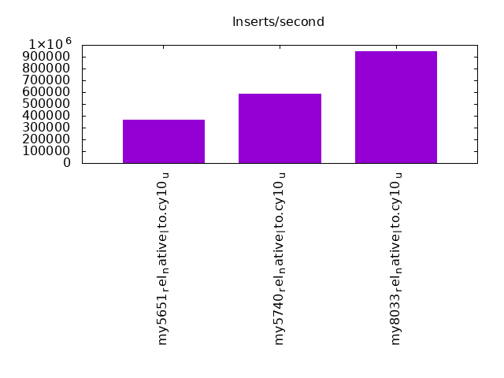
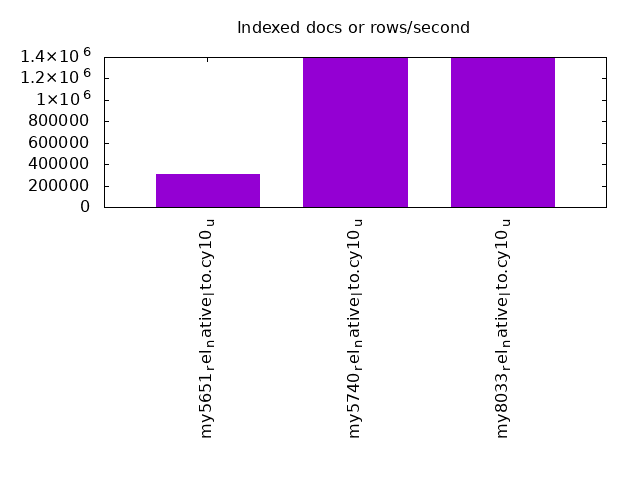
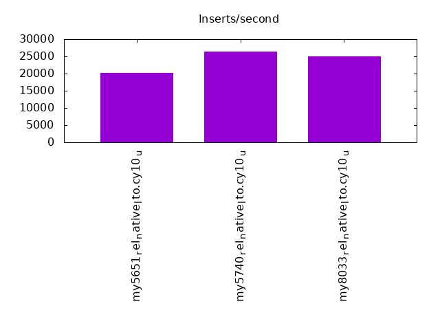
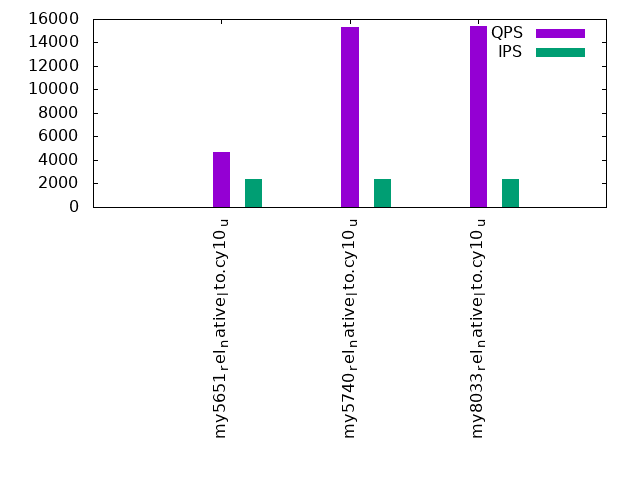
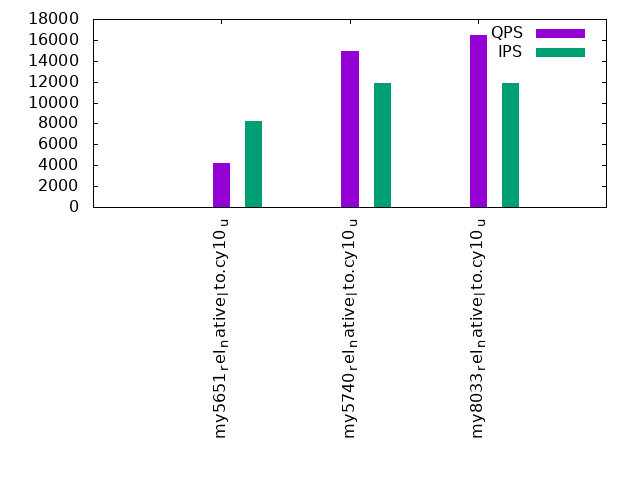
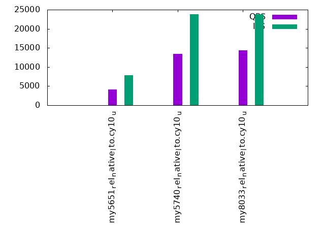

This is a report for the insert benchmark with 12000M docs and 24 client(s). It is generated by scripts (bash, awk, sed) and Tufte might not be impressed. An overview of the insert benchmark is here and a short update is here. Below, by DBMS, I mean DBMS+version.config. An example is my8020.c10b40 where my means MySQL, 8020 is version 8.0.20 and c10b40 is the name for the configuration file.
The test server has 80 cores with hyperthreads enabled, 256G RAM and fast storage. The benchmark was run with 24 client and there were 1 or 3 connections per client (1 for queries or inserts without rate limits, 1+1 for rate limited inserts+deletes). There are 24 tables, with a client per table. It loads 12B rows without secondary indexes, creates secondary indexes, then inserts 120M rows with a delete per insert to avoid growing the table. It then does 3 read+write tests for 3600s each that do queries as fast as possible with 100, 500 and then 1000 inserts/second/client concurrent with the queries and 1000 deletes/second to avoid growing the table. The database is larger than memory.
The tested DBMS are:
The numbers are inserts/s for l.i0 and l.i1, indexed docs (or rows) /s for l.x and queries/s for q*.2. The values are the average rate over the entire test for inserts (IPS) and queries (QPS). The range of values for IPS and QPS is split into 3 parts: bottom 25%, middle 50%, top 25%. Values in the bottom 25% have a red background, values in the top 25% have a green background and values in the middle have no color. A gray background is used for values that can be ignored because the DBMS did not sustain the target insert rate. Red backgrounds are not used when the minimum value is within 80% of the max value.
| dbms | l.i0 | l.x | l.i1 | q100.1 | q500.1 | q1000.1 |
|---|---|---|---|---|---|---|
| my5651_rel_native_lto.cy10_u | 368562 | 311999 | 20154 | 4660 | 4236 | 4143 |
| my5740_rel_native_lto.cy10_u | 588351 | 1391316 | 26426 | 15354 | 14904 | 13400 |
| my8033_rel_native_lto.cy10_u | 947343 | 1397798 | 24927 | 15422 | 16425 | 14394 |
This table has relative throughput, throughput for the DBMS relative to the DBMS in the first line, using the absolute throughput from the previous table. Values less than 0.95 have a yellow background. Values greater than 1.05 have a blue background.
| dbms | l.i0 | l.x | l.i1 | q100.1 | q500.1 | q1000.1 |
|---|---|---|---|---|---|---|
| my5651_rel_native_lto.cy10_u | 1.00 | 1.00 | 1.00 | 1.00 | 1.00 | 1.00 |
| my5740_rel_native_lto.cy10_u | 1.60 | 4.46 | 1.31 | 3.29 | 3.52 | 3.23 |
| my8033_rel_native_lto.cy10_u | 2.57 | 4.48 | 1.24 | 3.31 | 3.88 | 3.47 |
This lists the average rate of inserts/s for the tests that do inserts concurrent with queries. For such tests the query rate is listed in the table above. The read+write tests are setup so that the insert rate should match the target rate every second. Cells that are not at least 95% of the target have a red background to indicate a failure to satisfy the target.
| dbms | q100.1 | q500.1 | q1000.1 |
|---|---|---|---|
| my5651_rel_native_lto.cy10_u | 2380 | 8241 | 7842 |
| my5740_rel_native_lto.cy10_u | 2381 | 11907 | 23821 |
| my8033_rel_native_lto.cy10_u | 2381 | 11911 | 23828 |
| target | 2400 | 12000 | 24000 |
l.i0: load without secondary indexes. Graphs for performance per 1-second interval are here.
Average throughput:
Insert response time histogram: each cell has the percentage of responses that take <= the time in the header and max is the max response time in seconds. For the max column values in the top 25% of the range have a red background and in the bottom 25% of the range have a green background. The red background is not used when the min value is within 80% of the max value.
| dbms | 256us | 1ms | 4ms | 16ms | 64ms | 256ms | 1s | 4s | 16s | gt | max |
|---|---|---|---|---|---|---|---|---|---|---|---|
| my5651_rel_native_lto.cy10_u | 0.013 | 0.959 | 98.792 | 0.207 | 0.030 | nonzero | 0.278 | ||||
| my5740_rel_native_lto.cy10_u | 0.007 | 52.911 | 47.035 | 0.013 | 0.033 | nonzero | 0.305 | ||||
| my8033_rel_native_lto.cy10_u | 99.876 | 0.077 | 0.015 | 0.031 | 0.130 |
Performance metrics for the DBMS listed above. Some are normalized by throughput, others are not. Legend for results is here.
ips qps rps rmbps wps wmbps rpq rkbpq wpi wkbpi csps cpups cspq cpupq dbgb1 dbgb2 rss maxop p50 p99 tag 368562 0 2461 9.6 2459.7 104.5 0.007 0.027 0.007 0.290 91009 36.7 0.247 80 789.3 917.8 215.3 0.278 15085 13387 12000m.my5651_rel_native_lto.cy10_u 588351 0 1 0.0 3911.9 166.1 0.000 0.000 0.007 0.289 106956 42.0 0.182 57 789.3 917.8 216.3 0.305 24675 22178 12000m.my5740_rel_native_lto.cy10_u 947343 0 2 0.0 6399.4 275.2 0.000 0.000 0.007 0.297 236360 54.0 0.249 46 786.4 914.9 216.2 0.130 39460 33966 12000m.my8033_rel_native_lto.cy10_u
l.x: create secondary indexes.
Average throughput:
Performance metrics for the DBMS listed above. Some are normalized by throughput, others are not. Legend for results is here.
ips qps rps rmbps wps wmbps rpq rkbpq wpi wkbpi csps cpups cspq cpupq dbgb1 dbgb2 rss maxop p50 p99 tag 311999 0 4488 263.5 18406.4 682.2 0.014 0.865 0.059 2.239 96216 31.1 0.308 80 1626.5 1755.0 215.5 0.002 NA NA 12000m.my5651_rel_native_lto.cy10_u 1391316 0 14542 1171.6 21654.4 1509.4 0.010 0.862 0.016 1.111 182547 29.1 0.131 17 1764.9 1893.5 216.5 0.002 NA NA 12000m.my5740_rel_native_lto.cy10_u 1397798 0 25061 1345.5 29395.6 1258.1 0.018 0.986 0.021 0.922 167911 71.4 0.120 41 1758.4 1887.0 216.5 0.018 NA NA 12000m.my8033_rel_native_lto.cy10_u
l.i1: continue load after secondary indexes created. Graphs for performance per 1-second interval are here.
Average throughput:
Insert response time histogram: each cell has the percentage of responses that take <= the time in the header and max is the max response time in seconds. For the max column values in the top 25% of the range have a red background and in the bottom 25% of the range have a green background. The red background is not used when the min value is within 80% of the max value.
| dbms | 256us | 1ms | 4ms | 16ms | 64ms | 256ms | 1s | 4s | 16s | gt | max |
|---|---|---|---|---|---|---|---|---|---|---|---|
| my5651_rel_native_lto.cy10_u | 0.628 | 75.542 | 22.624 | 1.206 | 0.001 | 2.027 | |||||
| my5740_rel_native_lto.cy10_u | 1.527 | 80.281 | 18.186 | 0.006 | 0.337 | ||||||
| my8033_rel_native_lto.cy10_u | 1.934 | 82.092 | 15.545 | 0.429 | 0.864 |
Delete response time histogram: each cell has the percentage of responses that take <= the time in the header and max is the max response time in seconds. For the max column values in the top 25% of the range have a red background and in the bottom 25% of the range have a green background. The red background is not used when the min value is within 80% of the max value.
| dbms | 256us | 1ms | 4ms | 16ms | 64ms | 256ms | 1s | 4s | 16s | gt | max |
|---|---|---|---|---|---|---|---|---|---|---|---|
| my5651_rel_native_lto.cy10_u | 0.004 | 13.024 | 86.742 | 0.229 | 0.001 | nonzero | 1.489 | ||||
| my5740_rel_native_lto.cy10_u | 0.085 | 42.226 | 57.508 | 0.182 | 0.236 | ||||||
| my8033_rel_native_lto.cy10_u | 0.907 | 46.317 | 52.396 | 0.379 | 0.001 | 0.508 |
Performance metrics for the DBMS listed above. Some are normalized by throughput, others are not. Legend for results is here.
ips qps rps rmbps wps wmbps rpq rkbpq wpi wkbpi csps cpups cspq cpupq dbgb1 dbgb2 rss maxop p50 p99 tag 20154 0 33465 515.2 74876.8 1529.0 1.660 26.175 3.715 77.685 361156 36.0 17.919 1429 2419.6 2615.4 215.5 2.027 849 150 12000m.my5651_rel_native_lto.cy10_u 26426 0 46285 723.2 91971.5 2056.2 1.752 28.024 3.480 79.680 433620 44.2 16.409 1338 2416.1 2610.5 216.6 0.337 999 250 12000m.my5740_rel_native_lto.cy10_u 24927 0 43900 686.0 72322.3 2023.8 1.761 28.179 2.901 83.135 1038501 40.6 41.661 1303 2406.8 2599.1 216.5 0.864 1249 150 12000m.my8033_rel_native_lto.cy10_u
q100.1: range queries with 100 insert/s per client. Graphs for performance per 1-second interval are here.
Average throughput:
Query response time histogram: each cell has the percentage of responses that take <= the time in the header and max is the max response time in seconds. For max values in the top 25% of the range have a red background and in the bottom 25% of the range have a green background. The red background is not used when the min value is within 80% of the max value.
| dbms | 256us | 1ms | 4ms | 16ms | 64ms | 256ms | 1s | 4s | 16s | gt | max |
|---|---|---|---|---|---|---|---|---|---|---|---|
| my5651_rel_native_lto.cy10_u | 28.981 | 9.157 | 29.691 | 25.124 | 6.440 | 0.604 | 0.003 | 0.476 | |||
| my5740_rel_native_lto.cy10_u | 29.855 | 12.833 | 54.024 | 3.048 | 0.235 | 0.006 | nonzero | 0.303 | |||
| my8033_rel_native_lto.cy10_u | 15.044 | 29.765 | 48.100 | 6.609 | 0.466 | 0.014 | nonzero | 0.324 |
Insert response time histogram: each cell has the percentage of responses that take <= the time in the header and max is the max response time in seconds. For max values in the top 25% of the range have a red background and in the bottom 25% of the range have a green background. The red background is not used when the min value is within 80% of the max value.
| dbms | 256us | 1ms | 4ms | 16ms | 64ms | 256ms | 1s | 4s | 16s | gt | max |
|---|---|---|---|---|---|---|---|---|---|---|---|
| my5651_rel_native_lto.cy10_u | 4.842 | 38.807 | 37.060 | 19.291 | 0.763 | ||||||
| my5740_rel_native_lto.cy10_u | 69.992 | 29.075 | 0.908 | 0.024 | 0.348 | ||||||
| my8033_rel_native_lto.cy10_u | 57.404 | 40.981 | 1.556 | 0.059 | 0.412 |
Delete response time histogram: each cell has the percentage of responses that take <= the time in the header and max is the max response time in seconds. For max values in the top 25% of the range have a red background and in the bottom 25% of the range have a green background. The red background is not used when the min value is within 80% of the max value.
| dbms | 256us | 1ms | 4ms | 16ms | 64ms | 256ms | 1s | 4s | 16s | gt | max |
|---|---|---|---|---|---|---|---|---|---|---|---|
| my5651_rel_native_lto.cy10_u | 0.001 | 7.219 | 37.856 | 36.747 | 18.177 | 0.635 | |||||
| my5740_rel_native_lto.cy10_u | 0.012 | 81.207 | 18.145 | 0.624 | 0.013 | 0.340 | |||||
| my8033_rel_native_lto.cy10_u | 0.012 | 76.124 | 22.726 | 1.097 | 0.041 | 0.411 |
Performance metrics for the DBMS listed above. Some are normalized by throughput, others are not. Legend for results is here.
ips qps rps rmbps wps wmbps rpq rkbpq wpi wkbpi csps cpups cspq cpupq dbgb1 dbgb2 rss maxop p50 p99 tag 2380 4660 29995 467.7 24786.3 480.4 6.437 102.785 10.414 206.692 257481 31.7 55.255 5442 2419.6 2615.4 215.6 0.476 208 144 12000m.my5651_rel_native_lto.cy10_u 2381 15354 104784 1637.3 48426.6 1272.9 6.824 109.191 20.340 547.484 424882 25.8 27.672 1344 2416.1 2610.5 216.6 0.303 719 256 12000m.my5740_rel_native_lto.cy10_u 2381 15422 104593 1634.3 46446.9 1270.6 6.782 108.511 19.509 546.484 510110 25.9 33.076 1344 2406.8 2598.3 216.5 0.324 751 192 12000m.my8033_rel_native_lto.cy10_u
q500.1: range queries with 500 insert/s per client. Graphs for performance per 1-second interval are here.
Average throughput:
Query response time histogram: each cell has the percentage of responses that take <= the time in the header and max is the max response time in seconds. For max values in the top 25% of the range have a red background and in the bottom 25% of the range have a green background. The red background is not used when the min value is within 80% of the max value.
| dbms | 256us | 1ms | 4ms | 16ms | 64ms | 256ms | 1s | 4s | 16s | gt | max |
|---|---|---|---|---|---|---|---|---|---|---|---|
| my5651_rel_native_lto.cy10_u | 18.191 | 18.267 | 27.889 | 25.447 | 10.080 | 0.126 | nonzero | 0.289 | |||
| my5740_rel_native_lto.cy10_u | 24.525 | 16.983 | 54.983 | 3.486 | 0.022 | nonzero | 0.101 | ||||
| my8033_rel_native_lto.cy10_u | 11.356 | 32.138 | 49.892 | 6.592 | 0.022 | 0.062 |
Insert response time histogram: each cell has the percentage of responses that take <= the time in the header and max is the max response time in seconds. For max values in the top 25% of the range have a red background and in the bottom 25% of the range have a green background. The red background is not used when the min value is within 80% of the max value.
| dbms | 256us | 1ms | 4ms | 16ms | 64ms | 256ms | 1s | 4s | 16s | gt | max |
|---|---|---|---|---|---|---|---|---|---|---|---|
| my5651_rel_native_lto.cy10_u | 0.002 | 0.184 | 32.079 | 50.520 | 17.214 | 0.753 | |||||
| my5740_rel_native_lto.cy10_u | 20.077 | 79.870 | 0.053 | 0.115 | |||||||
| my8033_rel_native_lto.cy10_u | 7.274 | 92.008 | 0.718 | 0.173 |
Delete response time histogram: each cell has the percentage of responses that take <= the time in the header and max is the max response time in seconds. For max values in the top 25% of the range have a red background and in the bottom 25% of the range have a green background. The red background is not used when the min value is within 80% of the max value.
| dbms | 256us | 1ms | 4ms | 16ms | 64ms | 256ms | 1s | 4s | 16s | gt | max |
|---|---|---|---|---|---|---|---|---|---|---|---|
| my5651_rel_native_lto.cy10_u | 0.006 | 0.214 | 33.492 | 50.733 | 15.555 | 0.652 | |||||
| my5740_rel_native_lto.cy10_u | 0.013 | 52.273 | 47.707 | 0.006 | 0.102 | ||||||
| my8033_rel_native_lto.cy10_u | 0.002 | 25.736 | 74.086 | 0.176 | 0.171 |
Performance metrics for the DBMS listed above. Some are normalized by throughput, others are not. Legend for results is here.
ips qps rps rmbps wps wmbps rpq rkbpq wpi wkbpi csps cpups cspq cpupq dbgb1 dbgb2 rss maxop p50 p99 tag 8241 4236 25780 399.8 15114.7 361.9 6.086 96.628 1.834 44.966 298639 49.4 70.495 9329 2428.2 2626.6 215.6 0.289 176 128 12000m.my5651_rel_native_lto.cy10_u 11907 14904 106198 1659.3 63384.9 1475.4 7.125 114.007 5.323 126.878 459298 33.7 30.817 1809 2416.1 2610.5 216.6 0.101 623 559 12000m.my5740_rel_native_lto.cy10_u 11911 16425 115187 1799.8 58291.7 1598.1 7.013 112.205 4.894 137.398 650174 34.6 39.584 1685 2406.8 2601.6 216.5 0.062 687 623 12000m.my8033_rel_native_lto.cy10_u
q1000.1: range queries with 1000 insert/s per client. Graphs for performance per 1-second interval are here.
Average throughput:
Query response time histogram: each cell has the percentage of responses that take <= the time in the header and max is the max response time in seconds. For max values in the top 25% of the range have a red background and in the bottom 25% of the range have a green background. The red background is not used when the min value is within 80% of the max value.
| dbms | 256us | 1ms | 4ms | 16ms | 64ms | 256ms | 1s | 4s | 16s | gt | max |
|---|---|---|---|---|---|---|---|---|---|---|---|
| my5651_rel_native_lto.cy10_u | 18.204 | 18.972 | 27.816 | 24.665 | 10.115 | 0.223 | 0.005 | 0.912 | |||
| my5740_rel_native_lto.cy10_u | 18.682 | 21.826 | 52.970 | 6.477 | 0.045 | nonzero | 0.099 | ||||
| my8033_rel_native_lto.cy10_u | 6.573 | 35.323 | 49.224 | 8.793 | 0.087 | nonzero | 0.131 |
Insert response time histogram: each cell has the percentage of responses that take <= the time in the header and max is the max response time in seconds. For max values in the top 25% of the range have a red background and in the bottom 25% of the range have a green background. The red background is not used when the min value is within 80% of the max value.
| dbms | 256us | 1ms | 4ms | 16ms | 64ms | 256ms | 1s | 4s | 16s | gt | max |
|---|---|---|---|---|---|---|---|---|---|---|---|
| my5651_rel_native_lto.cy10_u | 0.002 | 0.115 | 33.398 | 46.209 | 20.274 | 0.002 | 1.726 | ||||
| my5740_rel_native_lto.cy10_u | 28.864 | 71.007 | 0.129 | nonzero | 0.286 | ||||||
| my8033_rel_native_lto.cy10_u | 20.505 | 78.685 | 0.810 | 0.230 |
Delete response time histogram: each cell has the percentage of responses that take <= the time in the header and max is the max response time in seconds. For max values in the top 25% of the range have a red background and in the bottom 25% of the range have a green background. The red background is not used when the min value is within 80% of the max value.
| dbms | 256us | 1ms | 4ms | 16ms | 64ms | 256ms | 1s | 4s | 16s | gt | max |
|---|---|---|---|---|---|---|---|---|---|---|---|
| my5651_rel_native_lto.cy10_u | 0.002 | 0.124 | 33.836 | 45.965 | 20.072 | 0.001 | 1.343 | ||||
| my5740_rel_native_lto.cy10_u | 0.002 | 47.704 | 52.228 | 0.065 | 0.236 | ||||||
| my8033_rel_native_lto.cy10_u | nonzero | 32.280 | 67.290 | 0.430 | 0.222 |
Performance metrics for the DBMS listed above. Some are normalized by throughput, others are not. Legend for results is here.
ips qps rps rmbps wps wmbps rpq rkbpq wpi wkbpi csps cpups cspq cpupq dbgb1 dbgb2 rss maxop p50 p99 tag 7842 4143 25372 393.5 15645.3 368.8 6.124 97.267 1.995 48.151 316147 51.9 76.311 10022 2438.7 2644.4 215.6 0.912 176 112 12000m.my5651_rel_native_lto.cy10_u 23821 13400 93165 1455.7 63945.2 1493.6 6.953 111.244 2.684 64.206 448853 45.1 33.497 2693 2420.2 2619.4 216.6 0.099 559 496 12000m.my5740_rel_native_lto.cy10_u 23828 14394 97787 1527.9 56828.7 1564.2 6.794 108.697 2.385 67.222 765823 48.1 53.204 2673 2412.2 2613.7 216.5 0.131 591 511 12000m.my8033_rel_native_lto.cy10_u
l.i0: load without secondary indexes
Performance metrics for all DBMS, not just the ones listed above. Some are normalized by throughput, others are not. Legend for results is here.
ips qps rps rmbps wps wmbps rpq rkbpq wpi wkbpi csps cpups cspq cpupq dbgb1 dbgb2 rss maxop p50 p99 tag 368562 0 2461 9.6 2459.7 104.5 0.007 0.027 0.007 0.290 91009 36.7 0.247 80 789.3 917.8 215.3 0.278 15085 13387 12000m.my5651_rel_native_lto.cy10_u 588351 0 1 0.0 3911.9 166.1 0.000 0.000 0.007 0.289 106956 42.0 0.182 57 789.3 917.8 216.3 0.305 24675 22178 12000m.my5740_rel_native_lto.cy10_u 947343 0 2 0.0 6399.4 275.2 0.000 0.000 0.007 0.297 236360 54.0 0.249 46 786.4 914.9 216.2 0.130 39460 33966 12000m.my8033_rel_native_lto.cy10_u
l.x: create secondary indexes
Performance metrics for all DBMS, not just the ones listed above. Some are normalized by throughput, others are not. Legend for results is here.
ips qps rps rmbps wps wmbps rpq rkbpq wpi wkbpi csps cpups cspq cpupq dbgb1 dbgb2 rss maxop p50 p99 tag 311999 0 4488 263.5 18406.4 682.2 0.014 0.865 0.059 2.239 96216 31.1 0.308 80 1626.5 1755.0 215.5 0.002 NA NA 12000m.my5651_rel_native_lto.cy10_u 1391316 0 14542 1171.6 21654.4 1509.4 0.010 0.862 0.016 1.111 182547 29.1 0.131 17 1764.9 1893.5 216.5 0.002 NA NA 12000m.my5740_rel_native_lto.cy10_u 1397798 0 25061 1345.5 29395.6 1258.1 0.018 0.986 0.021 0.922 167911 71.4 0.120 41 1758.4 1887.0 216.5 0.018 NA NA 12000m.my8033_rel_native_lto.cy10_u
l.i1: continue load after secondary indexes created
Performance metrics for all DBMS, not just the ones listed above. Some are normalized by throughput, others are not. Legend for results is here.
ips qps rps rmbps wps wmbps rpq rkbpq wpi wkbpi csps cpups cspq cpupq dbgb1 dbgb2 rss maxop p50 p99 tag 20154 0 33465 515.2 74876.8 1529.0 1.660 26.175 3.715 77.685 361156 36.0 17.919 1429 2419.6 2615.4 215.5 2.027 849 150 12000m.my5651_rel_native_lto.cy10_u 26426 0 46285 723.2 91971.5 2056.2 1.752 28.024 3.480 79.680 433620 44.2 16.409 1338 2416.1 2610.5 216.6 0.337 999 250 12000m.my5740_rel_native_lto.cy10_u 24927 0 43900 686.0 72322.3 2023.8 1.761 28.179 2.901 83.135 1038501 40.6 41.661 1303 2406.8 2599.1 216.5 0.864 1249 150 12000m.my8033_rel_native_lto.cy10_u
q100.1: range queries with 100 insert/s per client
Performance metrics for all DBMS, not just the ones listed above. Some are normalized by throughput, others are not. Legend for results is here.
ips qps rps rmbps wps wmbps rpq rkbpq wpi wkbpi csps cpups cspq cpupq dbgb1 dbgb2 rss maxop p50 p99 tag 2380 4660 29995 467.7 24786.3 480.4 6.437 102.785 10.414 206.692 257481 31.7 55.255 5442 2419.6 2615.4 215.6 0.476 208 144 12000m.my5651_rel_native_lto.cy10_u 2381 15354 104784 1637.3 48426.6 1272.9 6.824 109.191 20.340 547.484 424882 25.8 27.672 1344 2416.1 2610.5 216.6 0.303 719 256 12000m.my5740_rel_native_lto.cy10_u 2381 15422 104593 1634.3 46446.9 1270.6 6.782 108.511 19.509 546.484 510110 25.9 33.076 1344 2406.8 2598.3 216.5 0.324 751 192 12000m.my8033_rel_native_lto.cy10_u
q500.1: range queries with 500 insert/s per client
Performance metrics for all DBMS, not just the ones listed above. Some are normalized by throughput, others are not. Legend for results is here.
ips qps rps rmbps wps wmbps rpq rkbpq wpi wkbpi csps cpups cspq cpupq dbgb1 dbgb2 rss maxop p50 p99 tag 8241 4236 25780 399.8 15114.7 361.9 6.086 96.628 1.834 44.966 298639 49.4 70.495 9329 2428.2 2626.6 215.6 0.289 176 128 12000m.my5651_rel_native_lto.cy10_u 11907 14904 106198 1659.3 63384.9 1475.4 7.125 114.007 5.323 126.878 459298 33.7 30.817 1809 2416.1 2610.5 216.6 0.101 623 559 12000m.my5740_rel_native_lto.cy10_u 11911 16425 115187 1799.8 58291.7 1598.1 7.013 112.205 4.894 137.398 650174 34.6 39.584 1685 2406.8 2601.6 216.5 0.062 687 623 12000m.my8033_rel_native_lto.cy10_u
q1000.1: range queries with 1000 insert/s per client
Performance metrics for all DBMS, not just the ones listed above. Some are normalized by throughput, others are not. Legend for results is here.
ips qps rps rmbps wps wmbps rpq rkbpq wpi wkbpi csps cpups cspq cpupq dbgb1 dbgb2 rss maxop p50 p99 tag 7842 4143 25372 393.5 15645.3 368.8 6.124 97.267 1.995 48.151 316147 51.9 76.311 10022 2438.7 2644.4 215.6 0.912 176 112 12000m.my5651_rel_native_lto.cy10_u 23821 13400 93165 1455.7 63945.2 1493.6 6.953 111.244 2.684 64.206 448853 45.1 33.497 2693 2420.2 2619.4 216.6 0.099 559 496 12000m.my5740_rel_native_lto.cy10_u 23828 14394 97787 1527.9 56828.7 1564.2 6.794 108.697 2.385 67.222 765823 48.1 53.204 2673 2412.2 2613.7 216.5 0.131 591 511 12000m.my8033_rel_native_lto.cy10_u
Insert response time histogram
256us 1ms 4ms 16ms 64ms 256ms 1s 4s 16s gt max tag 0.000 0.013 0.959 98.792 0.207 0.030 nonzero 0.000 0.000 0.000 0.278 my5651_rel_native_lto.cy10_u 0.000 0.007 52.911 47.035 0.013 0.033 nonzero 0.000 0.000 0.000 0.305 my5740_rel_native_lto.cy10_u 0.000 0.000 99.876 0.077 0.015 0.031 0.000 0.000 0.000 0.000 0.130 my8033_rel_native_lto.cy10_u
TODO - determine whether there is data for create index response time
Insert response time histogram
256us 1ms 4ms 16ms 64ms 256ms 1s 4s 16s gt max tag 0.000 0.000 0.000 0.628 75.542 22.624 1.206 0.001 0.000 0.000 2.027 my5651_rel_native_lto.cy10_u 0.000 0.000 0.000 1.527 80.281 18.186 0.006 0.000 0.000 0.000 0.337 my5740_rel_native_lto.cy10_u 0.000 0.000 0.000 1.934 82.092 15.545 0.429 0.000 0.000 0.000 0.864 my8033_rel_native_lto.cy10_u
Delete response time histogram
256us 1ms 4ms 16ms 64ms 256ms 1s 4s 16s gt max tag 0.000 0.000 0.004 13.024 86.742 0.229 0.001 nonzero 0.000 0.000 1.489 my5651_rel_native_lto.cy10_u 0.000 0.000 0.085 42.226 57.508 0.182 0.000 0.000 0.000 0.000 0.236 my5740_rel_native_lto.cy10_u 0.000 0.000 0.907 46.317 52.396 0.379 0.001 0.000 0.000 0.000 0.508 my8033_rel_native_lto.cy10_u
Query response time histogram
256us 1ms 4ms 16ms 64ms 256ms 1s 4s 16s gt max tag 28.981 9.157 29.691 25.124 6.440 0.604 0.003 0.000 0.000 0.000 0.476 my5651_rel_native_lto.cy10_u 29.855 12.833 54.024 3.048 0.235 0.006 nonzero 0.000 0.000 0.000 0.303 my5740_rel_native_lto.cy10_u 15.044 29.765 48.100 6.609 0.466 0.014 nonzero 0.000 0.000 0.000 0.324 my8033_rel_native_lto.cy10_u
Insert response time histogram
256us 1ms 4ms 16ms 64ms 256ms 1s 4s 16s gt max tag 0.000 0.000 0.000 4.842 38.807 37.060 19.291 0.000 0.000 0.000 0.763 my5651_rel_native_lto.cy10_u 0.000 0.000 0.000 69.992 29.075 0.908 0.024 0.000 0.000 0.000 0.348 my5740_rel_native_lto.cy10_u 0.000 0.000 0.000 57.404 40.981 1.556 0.059 0.000 0.000 0.000 0.412 my8033_rel_native_lto.cy10_u
Delete response time histogram
256us 1ms 4ms 16ms 64ms 256ms 1s 4s 16s gt max tag 0.000 0.000 0.001 7.219 37.856 36.747 18.177 0.000 0.000 0.000 0.635 my5651_rel_native_lto.cy10_u 0.000 0.000 0.012 81.207 18.145 0.624 0.013 0.000 0.000 0.000 0.340 my5740_rel_native_lto.cy10_u 0.000 0.000 0.012 76.124 22.726 1.097 0.041 0.000 0.000 0.000 0.411 my8033_rel_native_lto.cy10_u
Query response time histogram
256us 1ms 4ms 16ms 64ms 256ms 1s 4s 16s gt max tag 18.191 18.267 27.889 25.447 10.080 0.126 nonzero 0.000 0.000 0.000 0.289 my5651_rel_native_lto.cy10_u 24.525 16.983 54.983 3.486 0.022 nonzero 0.000 0.000 0.000 0.000 0.101 my5740_rel_native_lto.cy10_u 11.356 32.138 49.892 6.592 0.022 0.000 0.000 0.000 0.000 0.000 0.062 my8033_rel_native_lto.cy10_u
Insert response time histogram
256us 1ms 4ms 16ms 64ms 256ms 1s 4s 16s gt max tag 0.000 0.000 0.002 0.184 32.079 50.520 17.214 0.000 0.000 0.000 0.753 my5651_rel_native_lto.cy10_u 0.000 0.000 0.000 20.077 79.870 0.053 0.000 0.000 0.000 0.000 0.115 my5740_rel_native_lto.cy10_u 0.000 0.000 0.000 7.274 92.008 0.718 0.000 0.000 0.000 0.000 0.173 my8033_rel_native_lto.cy10_u
Delete response time histogram
256us 1ms 4ms 16ms 64ms 256ms 1s 4s 16s gt max tag 0.000 0.000 0.006 0.214 33.492 50.733 15.555 0.000 0.000 0.000 0.652 my5651_rel_native_lto.cy10_u 0.000 0.000 0.013 52.273 47.707 0.006 0.000 0.000 0.000 0.000 0.102 my5740_rel_native_lto.cy10_u 0.000 0.000 0.002 25.736 74.086 0.176 0.000 0.000 0.000 0.000 0.171 my8033_rel_native_lto.cy10_u
Query response time histogram
256us 1ms 4ms 16ms 64ms 256ms 1s 4s 16s gt max tag 18.204 18.972 27.816 24.665 10.115 0.223 0.005 0.000 0.000 0.000 0.912 my5651_rel_native_lto.cy10_u 18.682 21.826 52.970 6.477 0.045 nonzero 0.000 0.000 0.000 0.000 0.099 my5740_rel_native_lto.cy10_u 6.573 35.323 49.224 8.793 0.087 nonzero 0.000 0.000 0.000 0.000 0.131 my8033_rel_native_lto.cy10_u
Insert response time histogram
256us 1ms 4ms 16ms 64ms 256ms 1s 4s 16s gt max tag 0.000 0.000 0.002 0.115 33.398 46.209 20.274 0.002 0.000 0.000 1.726 my5651_rel_native_lto.cy10_u 0.000 0.000 0.000 28.864 71.007 0.129 nonzero 0.000 0.000 0.000 0.286 my5740_rel_native_lto.cy10_u 0.000 0.000 0.000 20.505 78.685 0.810 0.000 0.000 0.000 0.000 0.230 my8033_rel_native_lto.cy10_u
Delete response time histogram
256us 1ms 4ms 16ms 64ms 256ms 1s 4s 16s gt max tag 0.000 0.000 0.002 0.124 33.836 45.965 20.072 0.001 0.000 0.000 1.343 my5651_rel_native_lto.cy10_u 0.000 0.000 0.002 47.704 52.228 0.065 0.000 0.000 0.000 0.000 0.236 my5740_rel_native_lto.cy10_u 0.000 0.000 nonzero 32.280 67.290 0.430 0.000 0.000 0.000 0.000 0.222 my8033_rel_native_lto.cy10_u